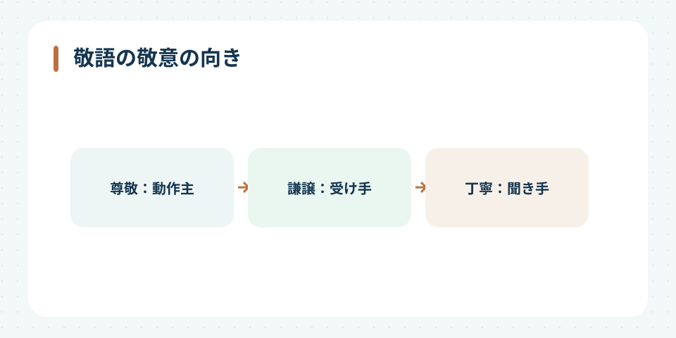

国語 / UNIVERSITY ENTRANCE EXAM
古文の敬語｜尊敬・謙譲・丁寧の見分け方
古文の敬語は「誰から誰への敬意か」を整理すると、主語が省略された文章でも人物関係を読み取りやすくなります。
文
このページで学べること
敬語の方向で人物関係を読み取る。要点を読んだら、最後の確認問題で理解度をチェックしましょう。
POINT 01
3種類の敬語と敬意の向き

| 種類 | 敬意の対象 | 例 |
|---|---|---|
| 尊敬語 | 動作をする人物 | おはす・のたまふ |
| 謙譲語 | 動作を受ける人物 | 参る・奉る |
| 丁寧語 | 聞き手・読み手 | 侍り・候ふ |
用語だけでなく「誰の動作に敬意を表すか」を毎回確認します。
POINT 02
尊敬語と謙譲語で主語を探す
「帝、御文をのたまふ。」なら、のたまふ は尊敬語で帝（動作主）への敬意。「臣、帝に申す。」なら、申す は謙譲語で動作の受け手である帝への敬意です。
入試の読解
人物が省略された文で「のたまふ」が現れたら、尊敬される高い地位の人物が主語である可能性を考えます。ただし前後の文脈と必ず照合します。
POINT 03
補助動詞にも注意
「〜給ふ（たまふ）」や「〜奉る」など、他の動詞に付いて敬意を表す使い方もあります。「給ふ」は活用の違いで尊敬と謙譲が分かれる用法があるので、一律に判断しないことが大切です。
敬語の名称だけ覚えず、動作主・受け手・話し手の三者を図にして整理しよう。
PRACTICE
確認問題に挑戦！
全3問。答えを考えてから「解答と解説を見る」を押してね。
Q01
「のたまふ」は基本的に何語？
解答と解説を見る ＋
正解・解答例
尊敬語
動作をする人物への敬意を示す。
Q02
謙譲語の敬意は主に誰へ向かう？
解答と解説を見る ＋
正解・解答例
動作の受け手
動作主を低めることで受け手を高める。
Q03
「侍り・候ふ」は丁寧語として誰への敬意？
解答と解説を見る ＋
正解・解答例
聞き手・読み手
話し手から対話相手への丁寧さ。
今日のまとめ
尊敬＝動作主、謙譲＝受け手、丁寧＝聞き手。
ここまで読めたら、ひと区切り。
理解できたら学習済みにチェックして、次の記事へ。
記事について
StudyMasterの無料学習コンテンツです。AIを補助的に用いて作成しています。例題・解答は公開前にご自身でも確認してください。内容に誤りがある場合は、学校の教科書などと照合してください。
公開・更新：2026年11月12日